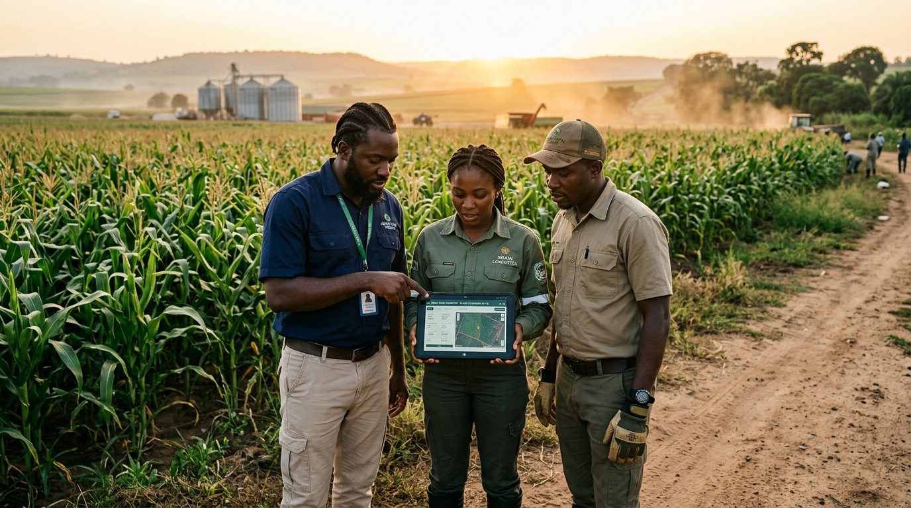
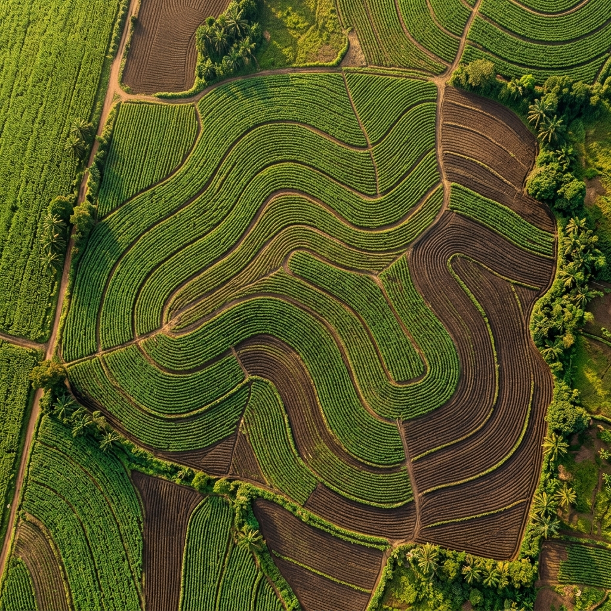

See what your fields need before yield is at risk.
Farmora ingests multispectral satellite NDVI, IoT soil moisture probes, and microclimate telemetry across 480,000+ hectares—detecting moisture deficits, fungal stress, and nitrogen anomalies before visible crop damage.

Watch how Olam Agri & Flour Mills of Nigeria protected 42,000ha of commercial maize from late-season blight.

The operating system for commercial agriculture
Turn agronomic insights into action: dispatch spray drones, adjust center pivot pumps, document crop scouting logs, and forecast harvest dates without human delay.
"With Farmora, our agronomy teams caught early leaf blight across 3,200 hectares in Niger State nearly three weeks before it became visible to scouts walking the rows. It saved our entire late-season maize harvest."

Catch every stress event, deploy targeted inputs, and protect crop margins.
Autonomous AI agents inspect every hectare across the entire season lifecycle, catching disease early and guiding field teams until harvest completes.
Autonomous Drone Scout Routing
Target high-stress anomaly coordinates automatically without wandering random crop rows.
Variable-Rate Nutrient Prescriptions
Turn red-edge chlorophyll reflectance directly into precision spray maps for tractors and drones.
Predictive Harvest Moisture Index
Forecast exact kernel dry-down curves to dispatch combine harvesters at maximum market value.
DJI Agras T40 coordinated flight plan — 480ha scanned in 3.4 hrs.
Today, commercial estates inspect less than 5% of their arable acres by foot. Crop stress hides in the rest. Moisture deficits become permanent wilt, and harvest margins vanish.
Connects directly to the machinery and sensors you already own.
Farmora ingests telemetry from John Deere, DJI Agras, Trimble, Sentera, and soil probes without disrupting how your farm operates.
Observe every hectare. Act on what the AI finds.
The complete spatial operating console for estate agronomists, farm managers, and regional directors.
Built by agronomists and AI engineers who know African soil.
Built in Nigeria · Expanding across Africa · Powering 480,000+ commercial hectares.
Ebele Nnaji
Raised on commercial grain farmland in Kaduna; formerly led operational agronomy at regional agro-cooperatives before founding Farmora.
Tochukwu Okereke
Satellite remote-sensing researcher and computer vision architect; built crop canopy stress detection models at African technology hubs.
Dr. Folake Adeleke
PhD in Plant Pathology; 12+ years optimizing commercial grain and outgrower yields across Nigeria, Ghana, and Côte d'Ivoire.
Chinedu Bakare
Agricultural mechanization specialist; previously deployed commercial drone spray fleets and IoT soil moisture networks across 200,000ha.
Deploy field intelligence across your hectares before the next rain.
Join commercial agricultural leaders across Nigeria and Africa who trust Farmora to safeguard their yield and automate precision operations.